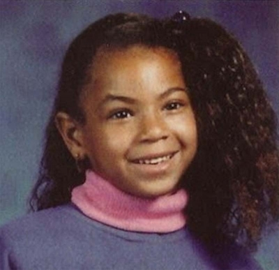
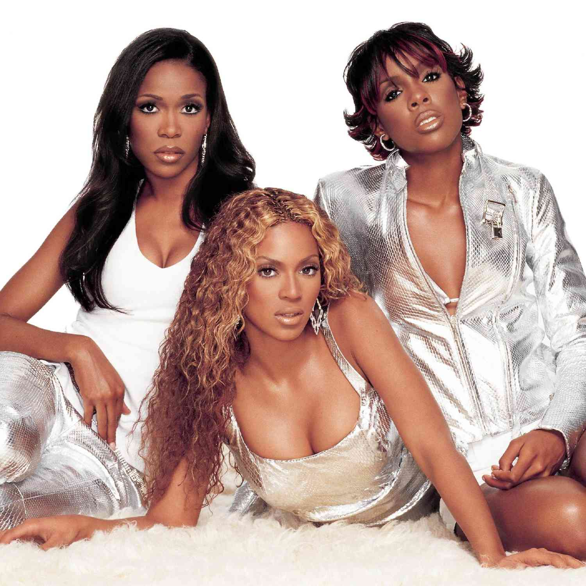
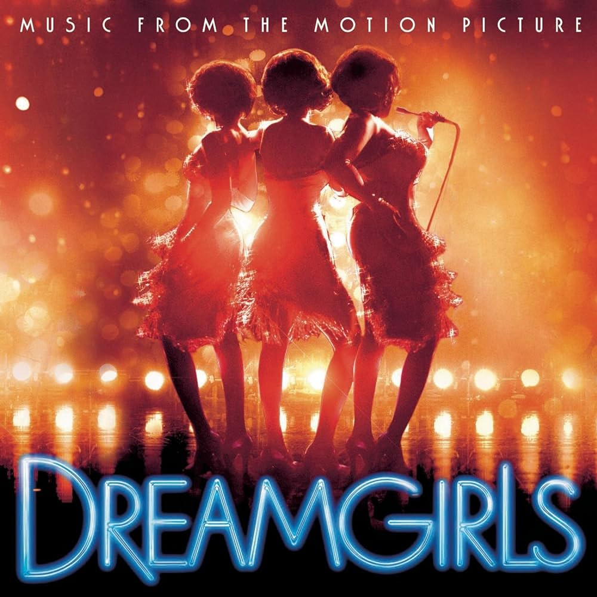
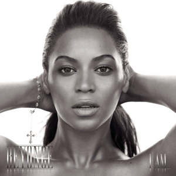
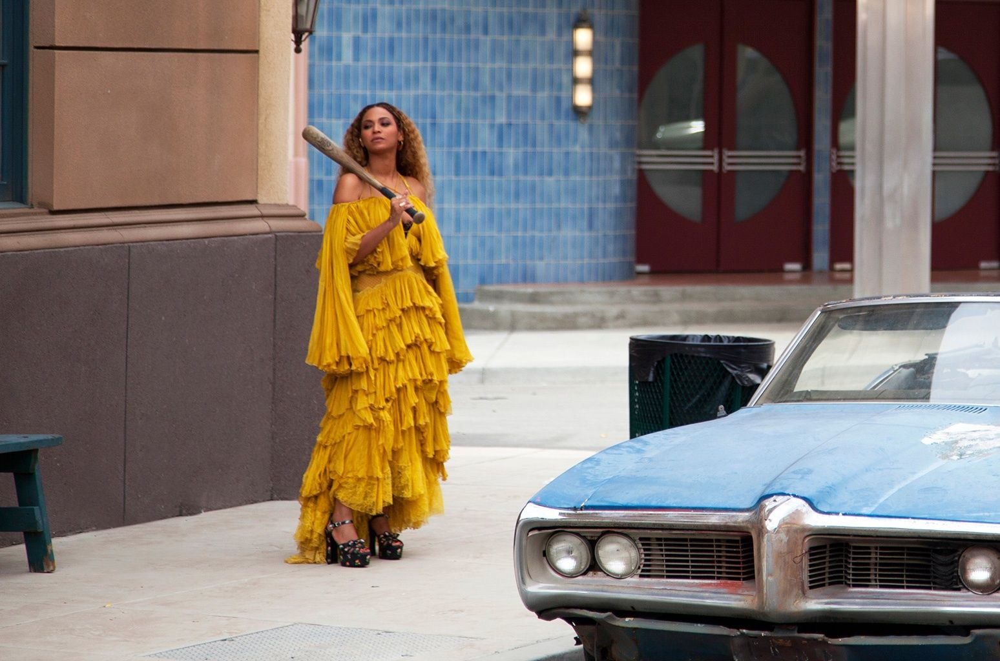
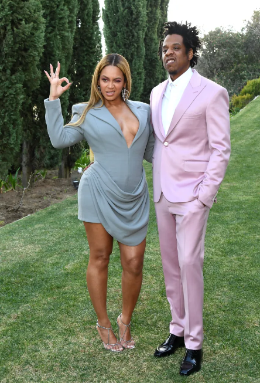
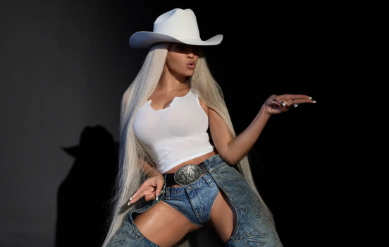

Beyonce Knowles-Carter
Beyonce Knowles Carter ~
I don't wanna be a hotgirl. I wanna be iconic.
Early Life and Career Beginnings (1981-1997):

Beyoncé Giselle Knowles was born on September 4, 1981, in Houston, Texas, to Celestine "Tina" Knowles, a hairdresser and salon owner, and Mathew Knowles, a Xerox sales manager. Tina is Louisiana Creole, and Mathew is African American. Beyoncé's younger sister, Solange Knowles, is also a singer and a former backup dancer for Destiny's Child. Solange and Beyoncé are the first sisters to have both had number one solo albums.
Beyoncé's maternal grandparents, Lumas Beyince, and Agnez Dereon were French-speaking Louisiana Creoles, with roots in New Iberia. Beyoncé is considered a Creole, passed on to her by her grandparents. She is a descendant of Acadian militia officer Joseph Broussard, who was exiled to French Louisiana after the expulsion of the Acadians.
Beyoncé's fourth great-grandmother, Marie-Françoise Trahan, was born in 1774 in Bangor, located on Belle Île, France. Trahan was a daughter of Acadians who had taken refuge on Belle Île after the Acadian expulsion. The Trahan family lived on Belle Île for over ten years before immigrating to Louisiana, where she married a Broussard descendant. Beyoncé researched her ancestry and discovered that she is descended from a slave owner who married his slave. Her mother is also of distant Irish, Jewish, Spanish, Chinese, and Indonesian ancestry.
Beyoncé was raised Methodist and attended St. John's United Methodist Church. She went to St. Mary's Montessori School in Houston, and enrolled in dance classes there. Her singing was discovered when dance instructor Darlette Johnson began humming a song and she finished it, able to hit the high-pitched notes. Beyoncé's interest in music and performing continued after winning a school talent show at age seven, singing John Lennon's "Imagine" to beat 15/16-year-olds. In the fall of 1990, Beyoncé enrolled in Parker Elementary School, a music magnet school in Houston, where she performed with the school's choir. She also attended the High School for the Performing and Visual Arts and later Alief Elsik High School. Beyoncé was also a member of the choir at St. John's United Methodist Church where she sang her first solo and was a soloist for two years.
When Beyoncé was eight, she met LaTavia Roberson at an audition for an all-girl entertainment group. They were placed into a group called Girl's Tyme with three other girls, and rapped and danced on the talent show circuit in Houston. After seeing the group, R&B producer Arne Frager brought them to his Northern California studio and placed them in Star Search, the largest talent show on national TV at the time. Girl's Tyme failed to win, and Beyoncé later said the song they performed was not good. In 1995, Beyoncé's father resigned from his job to manage the group. The move reduced the family's income by half, and Beyoncé's parents were forced to sell their house and cars and move into separated apartments.
Mathew cut the original line-up to four and the group continued performing as an opening act for other established R&B girl groups. The girls auditioned before record labels and were finally signed to Elektra Records, moving to Atlanta Records briefly to work on their first recording, only to be cut by the company. This put further strain on the family, and Beyoncé's parents separated. On October 5, 1995, Dwayne Wiggins's Grass Roots Entertainment signed the group. In 1996, the girls began recording their debut album under an agreement with Sony Music, the Knowles family reunited, and shortly after, the group got a contract with Columbia Records with the assistance of Columbia talent scout Teresa LaBarbera Whites.
.Destiny's Child Era (1997-2005):

The group changed their name to Destiny's Child in 1996, based upon a passage in the Book of Isaiah. In 1997, Destiny's Child released their major label debut song "Killing Time" on the soundtrack to the 1997 film Men in Black. In November, the group released their debut single and first major hit, "No, No, No" (lyrics). They released their self-titled debut album in February 1998, which established the group as a viable act in the music industry. The group released their Multi-Platinum second album The Writing's on the Wall in 1999. The record features songs such as "Bills, Bills, Bills", the group's first number-one single, "Jumpin' Jumpin'" and "Say My Name", which became their most successful song at the time, and would remain one of their signature songs. "Say My Name" won the Best R&B Performance by a Duo or Group with Vocals and the Best R&B Song at the 43rd Annual Grammy Awards. The Writing's on the Wall sold more than eight million copies worldwide. During this time, Beyoncé recorded a duet with Marc Nelson, an original member of Boyz II Men, on the song "After All Is Said and Done" for the soundtrack to the 1999 film, The Best Man.
The remaining band members recorded "Independent Women Part I", which appeared on the soundtrack to the 2000 film Charlie's Angels. It became their best-charting single, topping the U.S. Billboard Hot 100 chart for eleven consecutive weeks. In early 2001, while Destiny's Child was completing their third album, Beyoncé landed a major role in the MTV made-for-television film, Carmen: A Hip Hopera, starring alongside American actor Mekhi Phifer. Set in Philadelphia, the film is a modern interpretation of the 19th-century opera Carmen by French composer Georges Bizet. When the third album Survivor was released in May 2001, Luckett and Roberson filed a lawsuit claiming that the songs were aimed at them. The album debuted at number one on the U.S. Billboard 200, with first-week sales of 663,000 copies sold. The album spawned other number-one hits, "Bootylicious" and the title track, "Survivor", the latter of which earned the group a Grammy Award for Best R&B Performance by a Duo or Group with Vocals. After releasing their holiday album 8 Days of Christmas in October 2001, the group announced a hiatus to further pursue solo careers.
In July 2002, Beyoncé made her theatrical film debut, playing Foxxy Cleopatra alongside Mike Myers in the comedy film Austin Powers in Goldmember, which spent its first weekend atop the U.S. box office and grossed $73 million. Beyoncé released "Work It Out" as the lead single from its soundtrack album which entered the top ten in the UK, Norway, and Belgium. In 2003, Beyoncé starred opposite Cuba Gooding Jr. in the musical comedy The Fighting Temptations as Lilly, a single mother with whom Gooding's character falls in love. The film received mixed reviews from critics but grossed $30 million in the U.S. Beyoncé released "Fighting Temptation" as the lead single from the film's soundtrack album, with Missy Elliott, MC Lyte, and Free which was also used to promote the film. Another of Beyoncé's contributions to the soundtrack, "Summertime", fared better on the U.S. charts.
Solo Stardom (2003-present):
Dangerously In Love, B’ Day, and Dreamgirls

Beyoncé began her solo career with the release of her debut album, "Dangerously in Love", in June 2003. The album debuted at number one on the Billboard 200 chart and spawned hits like "Crazy in Love" and "Baby Boy". Beyoncé's success continued with multiple Grammy wins and a successful concert tour. Destiny's Child released their final album, "Destiny Fulfilled", in November 2004, before disbanding the following year. Beyoncé's second solo album, "B'Day", was released in September 2006, coinciding with her twenty-fifth birthday. It also debuted at number one on the Billboard 200 and produced hits like "Déjà Vu" and "Irreplaceable". During this time, Beyoncé ventured into acting with roles in films like "The Pink Panther" and "Dreamgirls", earning critical acclaim for her performance. She embarked on her first worldwide concert tour, "The Beyoncé Experience", in April 2007, and continued to expand her music career with re-releases and collaborations.
I Am… Sasha Fierce and 4

Beyoncé's album "I Am... Sasha Fierce", released in November 2008, introduced her alter ego and garnered mixed reviews but achieved commercial success. The singles "If I Were a Boy" and "Single Ladies (Put a Ring on It)" both reached number one, with "Single Ladies" spawning a viral dance craze and winning multiple awards. Beyoncé embarked on the "I Am... Tour" in 2009, grossing over $119 million. She also ventured into acting, receiving acclaim for her role as Etta James in "Cadillac Records" and starring in the thriller "Obsessed". At the 52nd Annual Grammy Awards, Beyoncé received ten nominations and won six, setting a new record. She collaborated with Lady Gaga on "Telephone", which became a chart-topper. Beyoncé announced a hiatus in 2010, during which she travelled and penned a cover story for Essence magazine. In 2011, she headlined the Glastonbury Festival and released her fourth studio album, "4", which debuted at number one. Beyoncé's performances at New York's Roseland Ballroom and Revel Atlantic City celebrated the success of "4", solidifying her status as a powerhouse performer.
Super Bowl XLVII, Beyonce, and Lemonade

In January 2013, Beyoncé performed at President Obama's second inauguration and at the Super Bowl XLVII halftime show, which became one of the most tweeted-about moments in history. Her documentary film "Life Is But a Dream" aired on HBO. The Mrs. Carter Show World Tour, launched in April 2013, became one of the most successful tours ever. In December 2013, Beyoncé released her surprise fifth studio album, which debuted atop the Billboard 200 chart and sold one million digital copies in six days. The album received critical acclaim and featured the hit single "Drunk in Love". Beyoncé and Jay-Z announced their On the Run Tour in April 2014. Beyoncé received the Michael Jackson Video Vanguard Award at the 2014 MTV Video Music Awards and was named the top-earning woman in music for the second year in a row by Forbes. In 2016, Beyoncé released "Formation" and embarked on The Formation World Tour. She also released the critically acclaimed visual album "Lemonade", which debuted atop the Billboard 200 chart and set streaming records. Beyoncé headlined the Coachella Music and Arts Festival in 2018 but withdrew due to pregnancy concerns. She continued to collaborate with other artists, including J Balvin, Eminem, and Ed Sheeran, achieving further success on the charts.
Everything is Love and The Lion King

On January 4, 2018, Beyoncé and Jay-Z released the music video for their collaboration "Family Feud", directed by Ava DuVernay. Beyoncé was featured on DJ Khaled's single "Top Off" released on March 1, 2018. On June 6, 2018, they commenced their joint On the Run II Tour, which concluded with the release of their joint album "Everything Is Love" as The Carters. Their album debuted at number two on the U.S. Billboard 200. In 2018, Beyoncé starred as Nala in the remake of "The Lion King" and released "Homecoming: A Film by Beyoncé", a documentary about her historic Coachella performances. She also contributed to the film's soundtrack and released "Black Is King", a visual album based on "The Lion King: The Gift". In 2020, Beyoncé released the charity single "Black Parade" and collaborated with Megan Thee Stallion on the remix of "Savage", which topped the Billboard Hot 100. She also released a visual album titled "Black Is King" on Disney+. In 2021, Beyoncé wrote and recorded "Be Alive" for the film "King Richard", receiving her first Academy Award nomination for Best Original Song.
Trilogy Project (2022- Present)

On March 27, 2022, Beyoncé performed "Be Alive" at the 94th Academy Awards, choreographed by Fatima Robinson, on the Compton tennis courts where Venus and Serena Williams practiced in their childhood. On June 9, 2022, she removed her social media profile pictures, sparking speculation of new music. Beyoncé hinted at her upcoming seventh studio album, "Renaissance," on June 15, 2022, and released its lead single, "Break My Soul," on June 20, 2022, with the album following on July 29, 2022. "Renaissance" received universal acclaim and debuted at number one on the Billboard 200 chart, making Beyoncé the first female artist with her first seven studio albums debuting at number one in the US. The controversy arose over the song "Heated," prompting Beyoncé to replace a potentially offensive term. She performed in Dubai in January 2023, facing criticism for performing in a country where homosexuality is illegal. Beyoncé announced the Renaissance World Tour on February 1, 2023, and appeared on Travis Scott's single "Delresto (Echoes)" in July 2023, marking her 100th appearance on the Billboard Hot 100 chart. Beyoncé released the documentary concert film "Renaissance: A Film by Beyoncé" in November 2023, chronicling her Renaissance World Tour. In February 2024, she launched her hair care brand, Cécred, and announced the second installment of her trilogy project, "Cowboy Carter," releasing its first two songs, "Texas Hold 'Em" and "16 Carriages," on February 11, 2024.